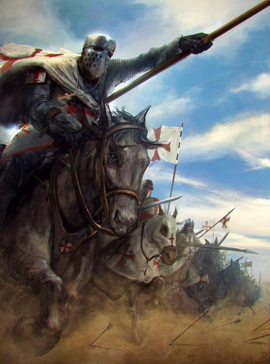
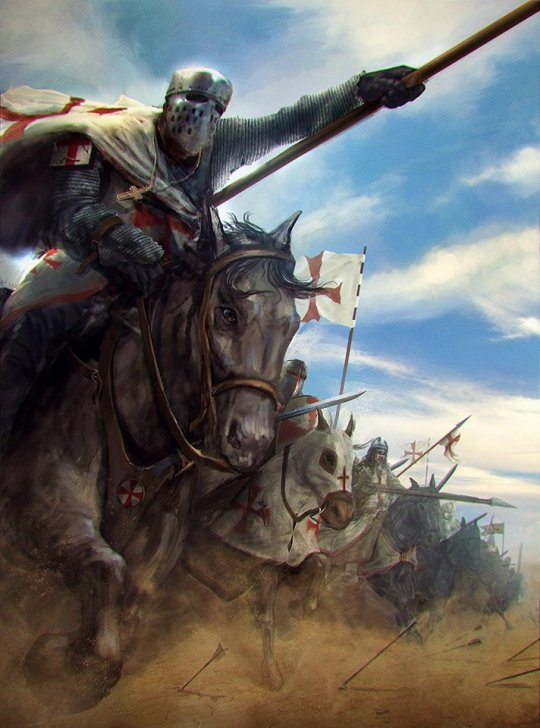

The Battle of Didgori (Georgian: დიდგორის ბრძოლა, romanized: didgoris brdzola) was fought between the armies of the Kingdom of
Georgia and the Seljuk Empire at the narrow place of Didgori, 40 km west of Tbilisi, on August 12, 1121. The large Muslim army,
under the command of Ilghazi, was unable to maneuver and suffered a devastating defeat due to King David IV of Georgia's effective
military tactics.
The battle at Didgori was the culmination of the entire Georgian–Seljuk wars and led to the Georgians' reconquest
of Tbilisi in 1122. Soon after that David moved the capital from Kutaisi to Tbilisi. The victory at Didgori inaugurated
the medieval Georgian Golden Age and is celebrated in The Georgian Chronicles as a (Georgian: ძლევაჲ საკვირველი dzlevay
sak'virveli lit. the "miraculous victory"). Modern Georgians continue to remember the event as an annual August 12 festival
known as Didgoroba ("[the day] of Didgori").

King David could not allow Ilghazi to unite with the Tbilisi Muslims, so he decided to intercept him on his way there.
He used a strategy of surprise and to entice the enemy step-by-step into a trap. He chose a mountainous and wooded area
near the Didgori Mountain range, situated between Manglisi and Tbilisi, to attack. "On August 11, 1121, King David led
his army along the Nichbisi valley from the ancient capital of Mtskheta and divided his troops into two parts, one under
his personal command and the other smaller group under his son Demetrius I, hidden in reserve behind the nearby heights
with orders to attack the flank at a given signal."
The course of the battle is differently related in the contemporary historical records. According to the Arab chronicler
Ibn al-Athir, David sent a small Kipchak detachment of his men in order to simulate negotiation. The Muslims thought that
the small detachment had left the Georgian army seeking protection, so the Muslims did not regard them as a threat.
Meanwhile, the Georgians successfully managed to deploy a large portion of their force where they would almost encircle
the enemy in a pincer movement. Their opponents remained unaware of such activities. Upon approaching the Seljuq leaders,
the deserters, using the self-confidence of the Muslims to their advantage, attacked them with arrows, killing every Seljuq
commander in sight and others who were attending the meeting.
While this was going on, David ordered a frontal attack on the enemy vanguard with his crusader knights which not only
devastated the enemy's forward lines, but also entangled the Seljuq archers in close combat, effectively taking out a
crucial component of Ilghazi's force. This trick resulted in chaos and panic among the Muslims. The Georgians then began
to quickly advance on the flanks from the western side of the mountain in full formation. Ilghazi and his son-in-law both
survived the attack on the vanguard, but were severely injured during the fight and withdrew from the battlefield, leaving
the Seljuq army virtually leaderless.
Section of the Didgori monument with swords stuck in the ground
The majority of his commanders were either injured or killed, which caused confusion and probably resulted in a lack of
adequate response to the chaotic situation. King David didn't hesitate and personally led the Georgian right flank, ordering
his heavy cavalry to ride straight into the seemingly disorganised Seljuk left flank, which was trying to reinforce the
vanguard. Having the advantage of moving downhill, the charge of the Georgian cavalry proved very effective.
Almost simultaneously the left wing, under the command of David's son Demetrius, struck the Seljuk right flank also with heavy
cavalry. When the Georgian infantry joined the fight, the Seljuq troops started to panic and retreated en masse through the huge
gap in their army's rearguard, which wasn't engaged in the battle. This provoked large numbers of uninvolved Seljuq troops to
flee as well, causing a massive rout, while their vanguard was completely annihilated. According to a Georgian chronicler,
King David’s troops pursued them for three days “putting all of them to the sword and leaving them to the carnivorous beasts
and birds of the mountains and plains” of the Manglisi Valley.
"Terrible and savage slaughter of the enemy troops ensued and the [enemy] corpses filled up the rivers and covered all valleys
and cliffs."
— Matthew of Edessa
With the Kipchaks joining in, the final remnants of Seljuq resistance crumbled and joined the rout. The battle was decided
within three hours with the Seljuq army overrun, leaving a very large number of dead, injured, prisoners, and booty. Fleeing
remnants were constantly pursued and run down for several days so that they wouldn't have time or opportunity to regroup or
commence any other move.
Aside from those accounts, it has also been suggested that confronted by a vanguard of the large invading force, David had to
rely on the advantages the nearby terrain offered to disguise his troop movements. The Seljuk cavalry was provoked or tricked
into a relatively narrow pass where they probably had not much room to maneuver. As these were cut off from the rest of
Ilghazi's army, the Georgians were easily able to take them out with spears, pikes, and light infantry using bows and
javelins. The rest of the coalition army was probably forced to climb slopes to attack the Georgian army's main body,
while being constantly struck at the flanks by heavy cavalry. After a while, those tactics broke the fighting will of
the Muslim army, which was soon routed. Ilghazi reportedly received an injury to his head when a hundred crusaders managed
to break through his lines, rushing towards the Seljuq command banner
 
